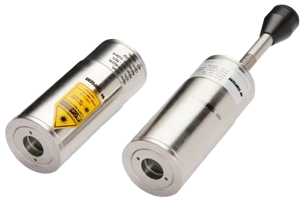
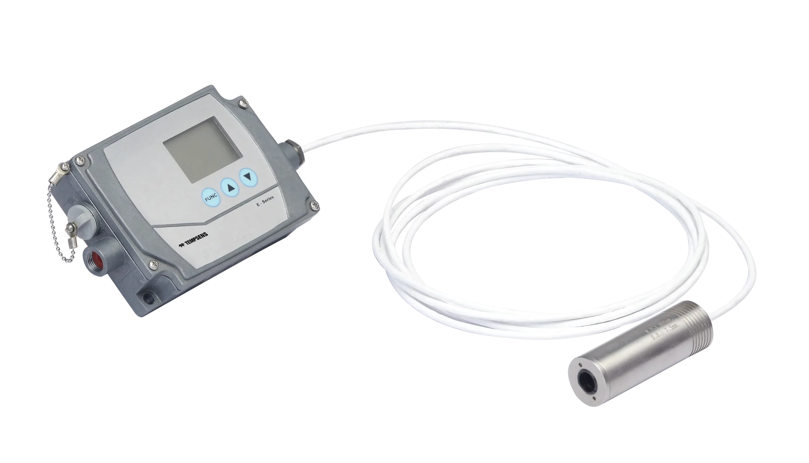

PYROMETER
NON-CONTACT TEMPERATURE MEASUREMENT





What's your primary challenge?
For moving targets, the A Series or E Series in fixed-mount configuration. Response from 2 ms. The sensor reads before the target passes. Portable P Series for spot checks on moving stock.
What are you measuring, and where?
WHAT YOU'RE MEASURING
Billet surface at the rolling mill exit. Ladle shell temperature. Reheating furnace interior. Continuous caster tundish. TMT quench zone exit temperature.
WHY CONTACT FAILS HERE
You can't place a contact sensor on steel moving at line speed. Ladle shells exceed sensor survival temperature. Furnace interiors need readings without disturbing the atmosphere.
THE KEY CHALLENGE
Scale and steam between the pyrometer and the billet distort the reading. Emissivity varies as the surface oxidises through the rolling process. Ladle shells need to be scanned continuously — one cold spot means refractory failure and a furnace shutdown.
RECOMMENDED SERIES
A Series or E Series for fixed mount. Portable P Series for spot-checking.
NEED SOMETHING DIFFERENT? WE CAN ENGINEER IT.
Every industrial process is unique. Tell us your target material, temperature requirements (-20°C to 3000°C), and environment — our application engineers will design a custom solution.